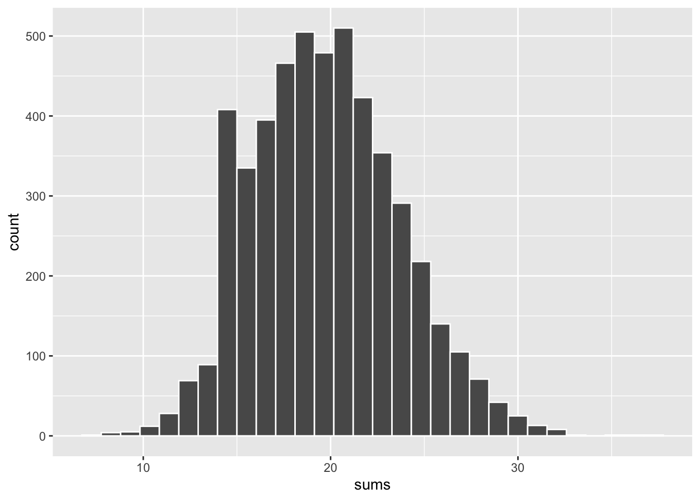

x <- c(0, 3, 5, 9)
sample(x, size = 5, prob = c(0.1, 0.2, 0.3, 0.4), replace = TRUE)
# equivalent
box <- c(0, 3, 3, 5, 5, 5, 9, 9, 9, 9)
sample(box, size = 5, replace = TRUE)Practice: Normal Approximation
1) Rolling a five-sided die
A fair five-sided die will be rolled \(n = 10\) times. Let \(S\) be the sum of the spots in the \(n\) rolls. Find:
\(E(S)\)
\(Var(S)\)
Show answers
\(E(S) = E(X_1 + X_2 + \dots + X_{10}) = 10 \times E(X) = 10 (3) = 30\)
\(Var(S) = Var(X_1 + X_2 + \dots + X_{10}) = 10 \times Var(X) = 10 (2) = 20\)
2) Rolling a six-sided die
A fair die will be rolled \(n\) times and the object is to guess the total number of spots in \(n\) rolls. For which value of \(n\) will the SE be greater:
\(n = 100\)
\(n = 200\)
SE will be the same regardless of \(n\)
Show answer
option a) will give you smaller SE
3) Sample Mean
We have a box of 50 tickets marked with one of {-3, 1, 0, 1, 3}. We draw \(n = 100\) tickets at random with replacement from this box, and look at the sample mean \(\bar{X}\). Find:
\(E(\bar{X})\)
\(Var(\bar{X})\)
Show answers
\(E(\bar{X}) = E\big((X_1 + X_2 + \dots + X_{100})/100 \big) = (100 \times E(X)) / 100 = 0\)
\(Var(\bar{X}) = Var\big((X_1 + X_2 + \dots + X_{100})/100 \big) = Var(X) / 100 \approx 0.04\)
4) Random Quantities
We have a box of 50 tickets marked with one of {-2, 1, 0, 1, 2}. We draw \(n\) tickets at random with replacement from this box. Which of the following quantities is random? Select all that apply.
The average of the tickets in the box
The variance of the tickets in the box
The average \(\bar{X}\) of the draws.
The sum \(S_n\) of the draws
Show answer
Options c) and d)
5) Box Model
Let \(X\) be a discrete random variable with the following pmf
\[ f(x) = \begin{cases} 0.1 & \text{for } x = 0 \\ 0.2 & \text{for } x = 3 \\ 0.3 & \text{for } x = 5 \\ 0.4 & \text{for } x = 9 \end{cases} \]
Write R code to simulate drawing a sample of size 5 with replacement from a box associated to the distribution of \(X\).
Show answers
6) Normal Distribution 1
Given that \(X\) is a normal variable with mean 110 and standard deviation 12, use pnorm() to find:
\(P(X \leq 120)\)
\(P(X \geq 80)\)
\(P(108 \leq X \leq 117)\)
Show answers
pnorm(120, mean = 110, sd = 12)pnorm(80, mean = 110, sd = 12, lower.tail = FALSE)pnorm(117, mean = 110, sd = 12) - pnorm(108, mean = 110, sd = 12)
7) Normal Distribution 2
Given that \(X\) is a normal variable with mean 0 and standard deviation 1, use qnorm() to find:
\(x\) such that \(P(X \leq x) = 0.05\)
\(x\) such that \(P(X \geq x) = 0.25\)
\(x\) such that \(P(-x \leq X \leq x) = 0.80\)
Show answers
qnorm(0.05, mean = 0, sd = 1)qnorm(0.25, mean = 0, sd = 1, lower.tail = FALSE)qnorm(0.1, mean = 0, sd = 1)andqnorm(0.1, mean = 0, sd = 1, lower.tail = FALSE)
8) Attendance
Attendance at large exhibition shows in San Francisco averages about 8000 people per day, with standard deviation of about 500. Assume that the daily attendance figures follow a normal distribution. Use pnorm() to find the probability that the daily attendance:
will be fewer than 7200 people
will be more than 8900 people
will be between 7100 and 8800 people
Show answers
pnorm(7200, mean = 8000, sd = 500)pnorm(8900, mean = 8000, sd = 500, lower.tail = FALSE)pnorm(8800, mean = 8000, sd = 500) - pnorm(7100, mean = 8000, sd = 500)
9) Lifespan
Assume that the life of of an electronic device is normally distributed with mean 5000 hours and standard deviation 450 hours.
Find the probability that the device will wear out in 4400 hours or less.
The manufacturer wants to place a guarantee on the devices so that no more than 5% fail during the guarantee period. How many hours should the guarantee cover?
Show answers
pnorm(4400, mean = 5000, sd = 450)qnorm(0.05, mean = 5000, sd = 450)
10) Height of Students
Suppose the heights of male graduate students are normally distributed with a mean of \(\mu = 72\) inches with standard deviation \(\sigma = 4\) inches.
What is the probability that a male student will be over 75 inches tall?
What is the probability that a male student chosen at random is less than 69 inches but more than 67 inches tall?
Suppose that a dormitory order beds for these students. The beds should be of such a size that only one man in one hundred will be too tall for this bed. What should the length of the beds be?
Show answers
pnorm(75, mean = 72, sd = 4, lower.tail = FALSE)pnorm(69, mean = 72, sd = 4) - pnorm(67, mean = 72, sd = 4)qnorm(0.01, mean = 72, sd = 4, lower.tail = FALSE)
11) CLT simulation
Consider a box with 50 tickets of which 40 are marked with “0” and 10 are marked with “1”. Suppose we draw 100 tickets—with replacement—from the box and look at the sum of the draws \(Sn\); like in the following code:
set.seed(468)
box <- c(rep(0, 40), rep(1, 10))
draws = sample(box, size = 100, replace = TRUE)
sum(draws)[1] 20Write R code, using the function replicate(), to generate 5,000 simulations of the above chance process, and make a histogram of the 5,000 sums. Does the Central Limit Theorem applies in this case?
Show answers
sums = replicate(
n = 5000,
expr = {
draws = sample(box, size = 100, replace = TRUE)
sum(draws)
}
)
data.frame(sums) |>
ggplot(aes(x = sums)) +
geom_histogram(color = "white")`stat_bin()` using `bins = 30`. Pick better value with `binwidth`.